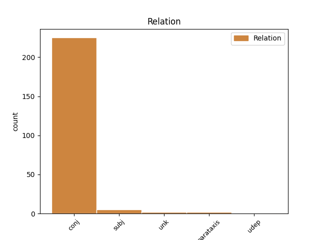
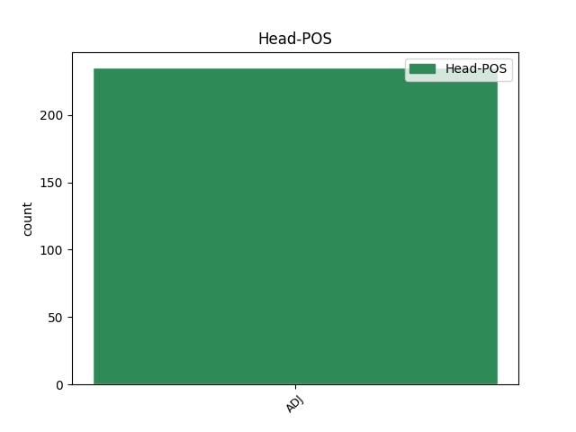
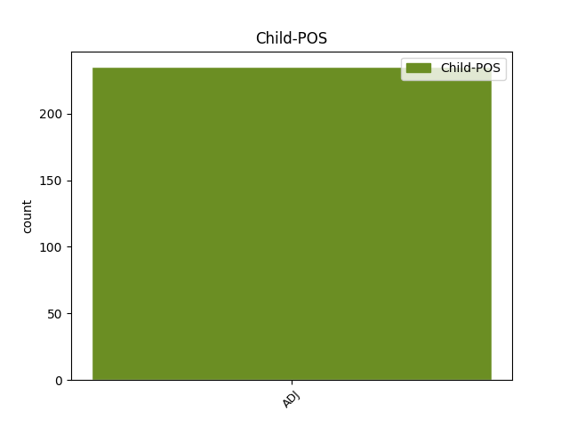

Distribution of features within this leaf



Agreement Rules sorted by frequency.
- When the dependent token is the conjunct(conj) of the head token, and the head token is ADJ and the dependent token is ADJ.
1 13 _ _ _ _ 0 _ _ _
2 . _ _ _ _ 0 _ _ _
3 Į _ _ _ _ 0 _ _ _
4 Komiteto _ _ _ _ 0 _ _ _
5 posėdžius _ _ _ _ 0 _ _ _
6 gali _ _ _ _ 0 _ _ _
7 būti _ _ _ _ 0 _ _ _
8 kviečiami _ _ _ _ 0 _ _ _
9 Aplinkos _ _ _ _ 0 _ _ _
10 ministerijos _ _ _ _ 0 _ _ _
11 , _ _ _ _ 0 _ _ _
12 jai _ _ _ _ 0 _ _ _
13 pavaldžių _ _ _ _ 0 _ _ _
14 ar _ _ _ _ 0 _ _ _
15 jos _ _ _ _ 0 _ _ _
16 reguliavimo _ _ _ _ 0 _ _ _
17 sričiai _ _ _ _ 0 _ _ _
18 priskirtų _ _ _ _ 0 _ _ _
19 institucijų _ _ _ _ 0 _ _ _
20 ir _ _ _ _ 0 _ _ _
21 organizacijų _ _ _ _ 0 _ _ _
22 specialistai _ _ _ _ 0 _ _ _
23 , _ _ _ _ 0 _ _ _
24 kitų _ _ _ _ 0 _ _ _
25 valstybės _ _ _ _ 0 _ _ _
26 ir _ _ _ _ 0 _ _ _
27 vietos _ _ _ _ 0 _ _ _
28 savivaldos _ _ _ _ 0 _ _ _
29 institucijų _ _ _ _ 0 _ _ _
30 pareigūnai _ _ _ _ 0 _ _ _
31 , _ _ _ _ 0 _ _ _
32 nepriklausomi _ _ _ _ 0 _ _ _
33 ekspertai _ _ _ _ 0 _ _ _
34 , _ _ _ _ 0 _ _ _
35 visuomeninių visuomeninis ADJ bdv.nelygin.mot.dgs.K. Case=Gen|Definite=Ind|Degree=Pos|Gender=Fem|Number=Plur 0 _ _ _
36 ir _ _ _ _ 0 _ _ _
37 nevyriausybinių nevyriausybinis ADJ bdv.nelygin.mot.dgs.K. Case=Gen|Definite=Ind|Degree=Pos|Gender=Fem|Number=Plur 35 conj _ _
38 organizacijų _ _ _ _ 0 _ _ _
39 atstovai _ _ _ _ 0 _ _ _
40 . _ _ _ _ 0 _ _ _
1 Užsieniečiai _ _ _ _ 0 _ _ _
2 pirko _ _ _ _ 0 _ _ _
3 duoną _ _ _ _ 0 _ _ _
4 , _ _ _ _ 0 _ _ _
5 net _ _ _ _ 0 _ _ _
6 cukrų _ _ _ _ 0 _ _ _
7 ir _ _ _ _ 0 _ _ _
8 sakydavo _ _ _ _ 0 _ _ _
9 , _ _ _ _ 0 _ _ _
10 kad _ _ _ _ 0 _ _ _
11 lietuviškasis lietuviškas ADJ bdv.nelygin.įvardž.vyr.vns.V. Case=Nom|Definite=Def|Degree=Pos|Gender=Masc|Number=Sing 13 subj _ _
12 labai _ _ _ _ 0 _ _ _
13 saldus saldus ADJ bdv.nelygin.vyr.vns.V. Case=Nom|Definite=Ind|Degree=Pos|Gender=Masc|Number=Sing 0 _ _ _
14 . _ _ _ _ 0 _ _ _
1 Jis _ _ _ _ 0 _ _ _
2 pamažu _ _ _ _ 0 _ _ _
3 tampa _ _ _ _ 0 _ _ _
4 panašus panašus ADJ bdv.nelygin.vyr.vns.V. Case=Nom|Definite=Ind|Degree=Pos|Gender=Masc|Number=Sing 36 parataxis _ _
5 į _ _ _ _ 0 _ _ _
6 didelį _ _ _ _ 0 _ _ _
7 kibiną _ _ _ _ 0 _ _ _
8 , _ _ _ _ 0 _ _ _
9 pasidengęs _ _ _ _ 0 _ _ _
10 taukais _ _ _ _ 0 _ _ _
11 kaip _ _ _ _ 0 _ _ _
12 tešla _ _ _ _ 0 _ _ _
13 , _ _ _ _ 0 _ _ _
14 jam _ _ _ _ 0 _ _ _
15 iš _ _ _ _ 0 _ _ _
16 nosies _ _ _ _ 0 _ _ _
17 ir _ _ _ _ 0 _ _ _
18 ausų _ _ _ _ 0 _ _ _
19 auga _ _ _ _ 0 _ _ _
20 šlykštūs _ _ _ _ 0 _ _ _
21 plaukai _ _ _ _ 0 _ _ _
22 , _ _ _ _ 0 _ _ _
23 viršugalvis _ _ _ _ 0 _ _ _
24 ima _ _ _ _ 0 _ _ _
25 spindėti _ _ _ _ 0 _ _ _
26 kaip _ _ _ _ 0 _ _ _
27 spalio _ _ _ _ 0 _ _ _
28 pabaigos _ _ _ _ 0 _ _ _
29 voratinkliai _ _ _ _ 0 _ _ _
30 , _ _ _ _ 0 _ _ _
31 o _ _ _ _ 0 _ _ _
32 aš _ _ _ _ 0 _ _ _
33 vis _ _ _ _ 0 _ _ _
34 dar _ _ _ _ 0 _ _ _
35 jaučiuosi _ _ _ _ 0 _ _ _
36 lieknas lieknas ADJ bdv.nelygin.vyr.vns.V. Case=Nom|Definite=Ind|Degree=Pos|Gender=Masc|Number=Sing 0 _ _ _
37 , _ _ _ _ 0 _ _ _
38 ilgaplaukis _ _ _ _ 0 _ _ _
39 , _ _ _ _ 0 _ _ _
40 pilnas _ _ _ _ 0 _ _ _
41 paslankumo _ _ _ _ 0 _ _ _
42 ir _ _ _ _ 0 _ _ _
43 noro _ _ _ _ 0 _ _ _
44 sunktis _ _ _ _ 0 _ _ _
45 visom _ _ _ _ 0 _ _ _
46 porom _ _ _ _ 0 _ _ _
47 į _ _ _ _ 0 _ _ _
48 būties _ _ _ _ 0 _ _ _
49 paslaptis _ _ _ _ 0 _ _ _
50 , _ _ _ _ 0 _ _ _
51 tačiau _ _ _ _ 0 _ _ _
52 tai _ _ _ _ 0 _ _ _
53 jis _ _ _ _ 0 _ _ _
54 reprezentuoja _ _ _ _ 0 _ _ _
55 mane _ _ _ _ 0 _ _ _
56 , _ _ _ _ 0 _ _ _
57 jis _ _ _ _ 0 _ _ _
58 fotografuojasi _ _ _ _ 0 _ _ _
59 laikraščiams _ _ _ _ 0 _ _ _
60 ir _ _ _ _ 0 _ _ _
61 pasui _ _ _ _ 0 _ _ _
62 , _ _ _ _ 0 _ _ _
63 jis _ _ _ _ 0 _ _ _
64 atsiliepia _ _ _ _ 0 _ _ _
65 telefonu _ _ _ _ 0 _ _ _
66 ir _ _ _ _ 0 _ _ _
67 atidaro _ _ _ _ 0 _ _ _
68 duris _ _ _ _ 0 _ _ _
69 išmaldos _ _ _ _ 0 _ _ _
70 prašytojams _ _ _ _ 0 _ _ _
71 , _ _ _ _ 0 _ _ _
72 jis _ _ _ _ 0 _ _ _
73 nesaikingai _ _ _ _ 0 _ _ _
74 prisisprogsta _ _ _ _ 0 _ _ _
75 alkoholio _ _ _ _ 0 _ _ _
76 , _ _ _ _ 0 _ _ _
77 pagirių _ _ _ _ 0 _ _ _
78 kančias _ _ _ _ 0 _ _ _
79 kaip _ _ _ _ 0 _ _ _
80 įprasta _ _ _ _ 0 _ _ _
81 palikdamas _ _ _ _ 0 _ _ _
82 man _ _ _ _ 0 _ _ _
83 . _ _ _ _ 0 _ _ _
1 Vargu _ _ _ _ 0 _ _ _
2 ar _ _ _ _ 0 _ _ _
3 tokius _ _ _ _ 0 _ _ _
4 gali _ _ _ _ 0 _ _ _
5 paguosti _ _ _ _ 0 _ _ _
6 Laozi _ _ _ _ 0 _ _ _
7 mintis _ _ _ _ 0 _ _ _
8 , _ _ _ _ 0 _ _ _
9 esą _ _ _ _ 0 _ _ _
10 , _ _ _ _ 0 _ _ _
11 žmogus _ _ _ _ 0 _ _ _
12 , _ _ _ _ 0 _ _ _
13 kol _ _ _ _ 0 _ _ _
14 gyvas gyvas ADJ bdv.nelygin.vyr.vns.V. Case=Nom|Definite=Ind|Degree=Pos|Gender=Masc|Number=Sing 17 udep _ SpaceAfter=No
15 , _ _ _ _ 0 _ _ _
16 yra _ _ _ _ 0 _ _ _
17 švelnus švelnus ADJ bdv.nelygin.vyr.vns.V. Case=Nom|Definite=Ind|Degree=Pos|Gender=Masc|Number=Sing 0 _ _ _
18 ir _ _ _ _ 0 _ _ _
19 silpnas _ _ _ _ 0 _ _ _
20 ; _ _ _ _ 0 _ _ _
21 miręs _ _ _ _ 0 _ _ _
22 jis _ _ _ _ 0 _ _ _
23 – _ _ _ _ 0 _ _ _
24 kietas _ _ _ _ 0 _ _ _
25 ir _ _ _ _ 0 _ _ _
26 tvirtas _ _ _ _ 0 _ _ _
27 . _ _ _ _ 0 _ _ _
1 Skanesnis skanus ADJ bdv.aukšt.vyr.vns.V. Case=Nom|Definite=Ind|Degree=Cmp|Gender=Masc|Number=Sing 0 _ _ _
2 atrodė _ _ _ _ 0 _ _ _
3 importinis importinis ADJ bdv.nelygin.vyr.vns.V. Case=Nom|Definite=Ind|Degree=Pos|Gender=Masc|Number=Sing 1 unk _ _
4 – _ _ _ _ 0 _ _ _
5 gražiai _ _ _ _ 0 _ _ _
6 supakuotas _ _ _ _ 0 _ _ _
7 , _ _ _ _ 0 _ _ _
8 blizgančiomis _ _ _ _ 0 _ _ _
9 etiketėmis _ _ _ _ 0 _ _ _
10 . _ _ _ _ 0 _ _ _
Disagree Examples:
1 Ši _ _ _ _ 0 _ _ _
2 svarbių _ _ _ _ 0 _ _ _
3 ir _ _ _ _ 0 _ _ _
4 originalių _ _ _ _ 0 _ _ _
5 įžvalgų _ _ _ _ 0 _ _ _
6 kupina _ _ _ _ 0 _ _ _
7 monografija _ _ _ _ 0 _ _ _
8 ypatinga _ _ _ _ 0 _ _ _
9 tuo _ _ _ _ 0 _ _ _
10 , _ _ _ _ 0 _ _ _
11 kad _ _ _ _ 0 _ _ _
12 pirmą _ _ _ _ 0 _ _ _
13 kartą _ _ _ _ 0 _ _ _
14 Lietuvos _ _ _ _ 0 _ _ _
15 akademiniuose _ _ _ _ 0 _ _ _
16 baruose _ _ _ _ 0 _ _ _
17 bandoma _ _ _ _ 0 _ _ _
18 pateikti _ _ _ _ 0 _ _ _
19 išsamią _ _ _ _ 0 _ _ _
20 , _ _ _ _ 0 _ _ _
21 visa _ _ _ _ 0 _ _ _
22 apimančią _ _ _ _ 0 _ _ _
23 Lietuvos _ _ _ _ 0 _ _ _
24 gerovės _ _ _ _ 0 _ _ _
25 valstybės _ _ _ _ 0 _ _ _
26 raidos _ _ _ _ 0 _ _ _
27 analizę _ _ _ _ 0 _ _ _
28 , _ _ _ _ 0 _ _ _
29 todėl _ _ _ _ 0 _ _ _
30 problemos _ _ _ _ 0 _ _ _
31 atskleidimo _ _ _ _ 0 _ _ _
32 ir _ _ _ _ 0 _ _ _
33 atskirų _ _ _ _ 0 _ _ _
34 aspektų _ _ _ _ 0 _ _ _
35 detalizavimo _ _ _ _ 0 _ _ _
36 lygis _ _ _ _ 0 _ _ _
37 yra _ _ _ _ 0 _ _ _
38 aukštas aukštas ADJ bdv.nelygin.vyr.vns.V. Case=Nom|Definite=Ind|Degree=Pos|Gender=Masc|Number=Sing 0 _ _ _
39 , _ _ _ _ 0 _ _ _
40 o _ _ _ _ 0 _ _ _
41 viso _ _ _ _ 0 _ _ _
42 darbo _ _ _ _ 0 _ _ _
43 apimtis _ _ _ _ 0 _ _ _
44 išties _ _ _ _ 0 _ _ _
45 įspūdinga įspūdingas ADJ bdv.nelygin.mot.vns.V. Case=Nom|Definite=Ind|Degree=Pos|Gender=Fem|Number=Sing 38 conj _ SpaceAfter=No
46 . _ _ _ _ 0 _ _ _
1 Norėti _ _ _ _ 0 _ _ _
2 būti _ _ _ _ 0 _ _ _
3 gražiam gražus ADJ bdv.nelygin.vyr.vns.N. Case=Dat|Definite=Ind|Degree=Pos|Gender=Masc|Number=Sing 0 _ _ _
4 ar _ _ _ _ 0 _ _ _
5 gražiai gražus ADJ bdv.nelygin.mot.vns.N. Case=Dat|Definite=Ind|Degree=Pos|Gender=Fem|Number=Sing 3 conj _ _
6 yra _ _ _ _ 0 _ _ _
7 natūralu _ _ _ _ 0 _ _ _
8 ir _ _ _ _ 0 _ _ _
9 neginčytina _ _ _ _ 0 _ _ _
10 , _ _ _ _ 0 _ _ _
11 tačiau _ _ _ _ 0 _ _ _
12 jei _ _ _ _ 0 _ _ _
13 kūną _ _ _ _ 0 _ _ _
14 vertiname _ _ _ _ 0 _ _ _
15 tik _ _ _ _ 0 _ _ _
16 pagal _ _ _ _ 0 _ _ _
17 tai _ _ _ _ 0 _ _ _
18 , _ _ _ _ 0 _ _ _
19 kiek _ _ _ _ 0 _ _ _
20 jis _ _ _ _ 0 _ _ _
21 atitinka _ _ _ _ 0 _ _ _
22 idealą _ _ _ _ 0 _ _ _
23 ar _ _ _ _ 0 _ _ _
24 jo _ _ _ _ 0 _ _ _
25 neatitinka _ _ _ _ 0 _ _ _
26 , _ _ _ _ 0 _ _ _
27 jis _ _ _ _ 0 _ _ _
28 taip _ _ _ _ 0 _ _ _
29 ir _ _ _ _ 0 _ _ _
30 liks _ _ _ _ 0 _ _ _
31 deramai _ _ _ _ 0 _ _ _
32 neįvertintas _ _ _ _ 0 _ _ _
33 . _ _ _ _ 0 _ _ _
1 Spaudos _ _ _ _ 0 _ _ _
2 tekstų _ _ _ _ 0 _ _ _
3 tyrimai _ _ _ _ 0 _ _ _
4 aktualūs aktualus ADJ bdv.nelygin.vyr.dgs.V. Case=Nom|Definite=Ind|Degree=Pos|Gender=Masc|Number=Plur 26 subj _ _
5 dar _ _ _ _ 0 _ _ _
6 ir _ _ _ _ 0 _ _ _
7 dėl _ _ _ _ 0 _ _ _
8 to _ _ _ _ 0 _ _ _
9 , _ _ _ _ 0 _ _ _
10 kad _ _ _ _ 0 _ _ _
11 žiniasklaida _ _ _ _ 0 _ _ _
12 – _ _ _ _ 0 _ _ _
13 viena _ _ _ _ 0 _ _ _
14 labiausiai _ _ _ _ 0 _ _ _
15 per _ _ _ _ 0 _ _ _
16 pastarąjį _ _ _ _ 0 _ _ _
17 dešimtmetį _ _ _ _ 0 _ _ _
18 pakitusių _ _ _ _ 0 _ _ _
19 realijų _ _ _ _ 0 _ _ _
20 Lietuvoje _ _ _ _ 0 _ _ _
21 , _ _ _ _ 0 _ _ _
22 todėl _ _ _ _ 0 _ _ _
23 jos _ _ _ _ 0 _ _ _
24 transformacijos _ _ _ _ 0 _ _ _
25 tokios _ _ _ _ 0 _ _ _
26 svarbios svarbus ADJ bdv.nelygin.mot.dgs.V. Case=Nom|Definite=Ind|Degree=Pos|Gender=Fem|Number=Plur 0 _ _ _
27 , _ _ _ _ 0 _ _ _
28 bet _ _ _ _ 0 _ _ _
29 tuo _ _ _ _ 0 _ _ _
30 pačiu _ _ _ _ 0 _ _ _
31 taip _ _ _ _ 0 _ _ _
32 mažai _ _ _ _ 0 _ _ _
33 tyrinėtos _ _ _ _ 0 _ _ _
34 . _ _ _ _ 0 _ _ _
1 Periodinė _ _ _ _ 0 _ _ _
2 spauda _ _ _ _ 0 _ _ _
3 jau _ _ _ _ 0 _ _ _
4 nebėra _ _ _ _ 0 _ _ _
5 tik _ _ _ _ 0 _ _ _
6 popierinė popierinis ADJ bdv.nelygin.mot.vns.V. Case=Nom|Definite=Ind|Degree=Pos|Gender=Fem|Number=Sing 0 _ _ _
7 , _ _ _ _ 0 _ _ _
8 todėl _ _ _ _ 0 _ _ _
9 svarbu svarbus ADJ bdv.nelygin.bev. Definite=Ind|Degree=Pos|Gender=Neut 6 conj _ _
10 tirti _ _ _ _ 0 _ _ _
11 ir _ _ _ _ 0 _ _ _
12 jos _ _ _ _ 0 _ _ _
13 transformacijas _ _ _ _ 0 _ _ _
14 elektroninėje _ _ _ _ 0 _ _ _
15 formoje _ _ _ _ 0 _ _ _
16 , _ _ _ _ 0 _ _ _
17 kur _ _ _ _ 0 _ _ _
18 yra _ _ _ _ 0 _ _ _
19 kitas _ _ _ _ 0 _ _ _
20 skaitymo _ _ _ _ 0 _ _ _
21 ir _ _ _ _ 0 _ _ _
22 informacijos _ _ _ _ 0 _ _ _
23 pateikimo _ _ _ _ 0 _ _ _
24 būdas _ _ _ _ 0 _ _ _
25 , _ _ _ _ 0 _ _ _
26 čia _ _ _ _ 0 _ _ _
27 visai _ _ _ _ 0 _ _ _
28 kitas _ _ _ _ 0 _ _ _
29 teksto _ _ _ _ 0 _ _ _
30 ir _ _ _ _ 0 _ _ _
31 vaizdo _ _ _ _ 0 _ _ _
32 santykis _ _ _ _ 0 _ _ _
33 . _ _ _ _ 0 _ _ _
1 Nederėtų _ _ _ _ 0 _ _ _
2 užmiršti _ _ _ _ 0 _ _ _
3 ir _ _ _ _ 0 _ _ _
4 pieno _ _ _ _ 0 _ _ _
5 bei _ _ _ _ 0 _ _ _
6 jo _ _ _ _ 0 _ _ _
7 produktų _ _ _ _ 0 _ _ _
8 , _ _ _ _ 0 _ _ _
9 ypač _ _ _ _ 0 _ _ _
10 sveika sveikas ADJ bdv.nelygin.bev. Definite=Ind|Degree=Pos|Gender=Neut 0 _ _ _
11 rūgštūs rūgštus ADJ bdv.nelygin.vyr.dgs.V. Case=Nom|Definite=Ind|Degree=Pos|Gender=Masc|Number=Plur 10 unk _ SpaceAfter=No
12 . _ _ _ _ 0 _ _ _